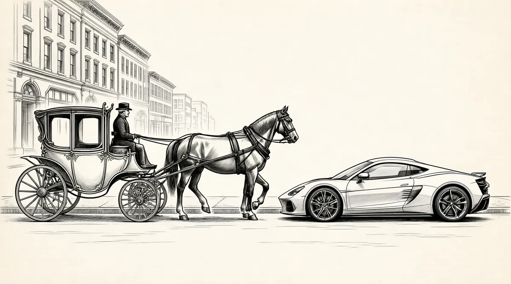

第18章 内布拉斯加小姐

在和女孩交往方面，沃伦一直是个失败者。他很渴望有一位女朋友，但他与众不同的特质阻碍了他在这方面的诉求。“和女孩子们待在一起的时候，我是最害羞的一个，”他说，“不过，我对此的应对可能就是让自己变成一台说话机器。”一旦他把股票或政治话题都说完了，他就只能开始咕咕哝哝。他很害怕邀请女孩出来约会，当有女孩偶尔做了一些事，让他觉得自己不会被拒绝的时候，他就能鼓起勇气，但是一般而言，他的态度是，“为什么她们不来约我呢？”因此，在高中和大学期间，他并没有太多约会。而当他有约会的时候，总有些事似乎不太对劲儿。
有一次约会是和一个叫杰基·吉莉安的女孩去看棒球比赛，而高潮是在回家的路上，车撞上了一头奶牛。他带另一个女孩去高尔夫球场打球，结果也不顺利。1开着灵车去接芭芭拉·威根德，用沃伦的话说，“真的有点儿令人绝望”。和像安·贝克这样害羞的女孩出去约会，他就像变哑了一样，一声不吭。他心里很没有把握，不知道该怎么做。女孩子们也不想听什么本杰明·格雷厄姆和安全边际。如果他和鲍比·沃利的关系连一垒都到不了——她整个夏天都在和沃伦约会——那他还有什么希望呢？他想，几乎没有什么希望，也许姑娘们也这么想。
最后，1950年，在沃伦回哥伦比亚大学前的那个夏天，沃伦的妹妹伯蒂为他和她在西北大学的室友安排了一次约会。对方是一个脸形圆圆、像洋娃娃一样的女孩，一头浅黑色的头发，名字叫苏珊·汤普森。2她比伯蒂大18个月，通过短时间的接触，她就给伯蒂留下了深刻的印象，是一个很善解人意的、特别的女孩。3沃伦一见到苏珊，立刻就被吸引住了，不过，他怀疑她好得不真实：“一开始，我认为她是装出来的。我被她迷住了，并打算追求她，我决心找到一个突破口。我只是不相信有人真的像她这样。”不过，苏珊对沃伦并不感兴趣，她爱着别人。
在沃伦出发去哥伦比亚大学之后，在《纽约邮报》的伊尔·威尔森的随笔专栏上，4他看到1949年的内布拉斯加小姐范尼塔·梅·布朗正住在韦伯斯特女性住宅区5，并和年轻的偶像歌手埃迪·费希尔在电视上表演。
范尼塔和沃伦同期在内布拉斯加大学读书，虽然直到现在她才引起沃伦的注意和追求。内心的一些感受战胜了沃伦的内向，魅力四射的内布拉斯加小姐在纽约生活，于是沃伦给住在韦伯斯特的范尼塔打了一通电话。
范尼塔“上钩”了，不久之后，他们就开始约会。沃伦了解到她的成长背景和自己没有任何相似之处。范尼塔长在南奥马哈的牲畜饲养场，放学后就在奥马哈冷藏库清洗鸡肉。她那可以上封面的身材，以及邻家女孩风格的脸蛋，令她离开了生长地。她在奥马哈的派拉蒙电影院找到一份引座员的工作，之后，她成功地利用喜欢展现自己的特点，在当地的选美大赛上摘得桂冠。巴菲特说：“我觉得，她天生的特质和性情迷倒了评委。”在获得了“内布拉斯加小姐”的头衔之后，她以“内布拉斯加公主”的身份代表内布拉斯加州参加了华盛顿特区的樱花节。然后，她离开华盛顿来到了纽约，拼命想要在演艺事业上取得成功。
虽然沃伦并不是那种会带女孩子去斯托克俱乐部共进晚餐，或者去科帕卡巴纳看演出的人，不过，范尼塔还是很欢迎自己的老乡。很快，这两人就一起游逛纽约的大街。两人都期盼着彼此的关系升温，因此，还去了大理石教堂，去听诺尔玛·文森特·皮尔博士的演讲——在自我提升领域，此君是享有名气的作家和演说家。在哈得孙河畔，沃伦用夏威夷四弦琴为范尼塔弹奏《甜甜的乔吉亚·布朗》，并随身带着奶酪三明治作为郊游的食物。
即使范尼塔很讨厌奶酪三明治，但她似乎很愿意一直和沃伦见面。6沃伦发现范尼塔是个很有趣的人，而且反应敏捷，和她交谈就像是在玩儿嘴上乒乓。7范尼塔浑身散发的绚丽光环令她具有如磁石般的吸引力。不过，范尼塔对沃伦的兴趣并没有蒙蔽沃伦，没有令他忘记自己毫无社交技巧。时光一年年过去，他对社交能力的提高越发感到绝望。他看到一则戴尔·卡内基的公开演讲课程的广告——沃伦很认同戴尔·卡内基，因为他的方法曾经帮助他与人更好地相处。于是，沃伦揣上100美元，去纽约听这门卡内基课程。
我去听戴尔·卡内基的课，因为我的社交适应能力让我痛苦万分。我到那儿，付了钱，但后来没有继续下去，因为我失去了勇气。
就沃伦对苏珊·汤普森的追求而言，他的社交缺陷不是什么好兆头，他整个秋天都在给苏珊写信。苏珊的反应并不令沃伦感到乐观，不过她也没让沃伦别去骚扰她。沃伦很快就想到一条策略，通过成为苏珊父母的朋友来接近他们的女儿。感恩节的时候，沃伦和他们一起去埃文斯顿市，看西北大学的橄榄球比赛。之后，他们三人和苏珊一起吃晚餐，不过，苏珊很早就甩下他们，出门约会去了。8
沃伦在假期后回到纽约，很气馁，但心里仍然迷恋苏珊。他还是继续和范尼塔见面。沃伦说：“在我遇到的人中，她是最具想象力的一个。”
实际上，沃伦和范尼塔的约会开始游走于意外和风险的边缘。很多次，当霍华德在众议院讲话的时候，范尼塔都威胁沃伦说要去华盛顿，跪在霍华德面前，尖声大叫：“你儿子是我未出世的孩子的父亲！”沃伦觉得她可能真的会这么干。还有一次，他们离开电影院，因为无法再看下去了，这时，她想象出这样一出场景：沃伦把她举起来，折叠好，塞进街角的铁丝网垃圾筒。她悬挂在那里，高声呼叫，而沃伦则大步离去。9
范尼塔漂亮又聪明，也很有趣，但同时，她也很危险。沃伦心知，和她纠缠得越来越深是一件危险的事儿。但是，与她的交往也确实令人感到激动，就像是用链条牵着一只豹子，看它能否成为一只乖巧的宠物。“范尼塔能够让自己的表现非常得体，要做到这点，她没有任何难处。唯一的问题在于，她是否想这么做。如果她不想令你难堪，那么你就无须杞人忧天。”
有一次，沃伦邀请范尼塔去纽约运动员俱乐部参加为弗兰克·马修斯举行的宴会。弗兰克是一位知名律师，同时也是海军部部长。一位美丽的内布拉斯加小姐挽着自己是一件很加分的事。马修斯也是内布拉斯加人，参加宴会的人全都是值得结交的人，沃伦也希望自己被人结识。在鸡尾酒会的时候，范尼塔真的让沃伦成了人们的话题。当沃伦介绍范尼塔是他的女伴后，范尼塔纠正了他的说法，并坚持说自己是他的妻子。“我不知道他为何这么做，”范尼塔说，“我令他颜面无光吗？你们也以我为耻吗？每次我们外出，他都假装我只是他的女朋友，其实我们已经结婚了。”
最后，沃伦意识到，虽然范尼塔想控制自己的所作所为时能做得很得体，但“事实是，她总是想要令我尴尬，她就喜欢这么对我”。然而，范尼塔身上散发着迷人的魅力，如果沃伦没有其他的人选，之后会发生什么事，谁都说不准。10
每次沃伦回到内布拉斯加的家里，只要苏珊·汤普森同意，他就去见她，虽然这样的情况不是太多。在沃伦看来，苏珊非常成熟，甚至有权威感，而且博爱。“苏珊比我要成熟得多。”沃伦说。他开始深深为苏珊而倾倒，并离开范尼塔，即便对苏珊而言，他“明显不是头号选择”。11“我的意图和想法非常清楚，”沃伦说，“不过，我就是无法打动她。”
对巴菲特一家而言，苏珊·汤普森家并不陌生，实际上，正是苏珊的父亲，汤普森博士，一手策划了霍华德唯一一次失败的再竞选活动。不过，在大部分方面，他们和沃伦要多不同就有多不同。苏珊的母亲多萝西·汤普森身材娇小，长相甜美，待人温和、真诚，洞彻这个世界，在家里是个贤妻良母。她在下午6点分秒不差地将晚餐摆上饭桌，照顾她的丈夫威廉·汤普森博士所领导的一家大小。威廉·汤普森个头矮小，有着一头很炫的银发。他总打着领结，穿着三件套的纯毛西服，通常是淡紫色、糖果粉红色或黄绿色的。他风头正劲，总是带着一种自信：自己正被人崇拜。他说，他抵得上“一长队的教师和传道士”。12
威廉·汤普森是奥马哈大学文理学院的院长，他在管理学院的同时还教授心理学课程。而作为助理体育主任，他还负责大学里的体育课程，并以一位前橄榄球运动员和体育迷的所有热忱管理着这些课程。这一角色令他出名到“镇上每个警察都认识他，因为他的驾驶方式”，巴菲特说，“这是一件好事”。威廉·汤普森还设计智商和心理测试题，并监督市里所有上学的孩子进行这方面的测试。13他并不在意在休息日打扰人们，并测试他们的小孩。每逢周日，他还会穿上圣命牧师的圣衣，在小小的艾文顿的基督教堂里用低沉而浑厚的声音非常缓慢地布道，而他的两个女儿则组成唱诗班。14在其他时间，威廉会向周围的人宣讲他的政治信仰——他的政治立场和霍华德很相似。
虽然汤普森博士坚持认为他的要求应立刻得到服从，但他在表达的时候还是带着和气的笑容。当他希望女性服侍他的时候，他会谈论女性的重要性。他的工作都是围绕着内在的自我，但很显然他未能成功。他对自己所爱的人跟得很紧，当他们离开他的视线时，他就变得紧张。他是一名焦虑的慢性抑郁症患者，他经常预想着会有某种灾祸降临到他关心的人身上。他很宠溺那些满足他苛刻要求的人。
汤普森的大女儿多蒂并不讨他的欢心。根据家里人的说法，在多蒂很小的时候，他特别不喜欢她，把她锁在壁橱里。15厚道的解释是，汤普森承受着要完成博士学业的压力，而女儿在旁边蹒跚学步，这种压力令他的行为有所失常。
多蒂7岁的时候，他们的二女儿苏珊出生了。多萝西·汤普森在看到多蒂以恶劣态度回应她父亲残酷、粗暴的养育方式之后，大概向丈夫声明说，“你养了那个女儿，我来负责另一个”。
苏珊自打出生起就体弱多病，她有过敏症，还有慢性耳炎。从出生到18个月大的这段时间，苏珊忍受了很多次的耳朵手术。她还深受风湿热的长期折磨。病痛曾使她在家待了四五个月，她都没能去上幼儿园中班。苏珊后来回忆说，在这段时间里，她只能看着她的朋友在窗外玩耍，虽然她很想和他们一起玩。16
在苏珊多病期间，汤普森一家经常哄着她、抱着她，给她安慰。她的父亲很溺爱她。“他一辈子也没远离她的身边，”沃伦说，“苏珊不会犯错，而多蒂做什么都是错，他们对多蒂太挑剔了。”
在一段家庭录像带里，4岁左右的苏珊嘴里大叫着“不”，支使着11岁的多蒂干这干那，她们当时正在玩儿一套茶具。17
当最后苏珊身体好转，不用再在家里当“囚犯”的时候，她并没有去运动或玩儿户外游戏，而是一直渴望交朋友。18在她漫长的患病期间，她所错过的是与人交往。
“当你承受着痛苦的时候，”苏珊后来回忆，“解除痛苦给人自由，这真的令人向往。能解除痛苦太棒了，我在很小的时候就明白了。明白了这点，你就能够以简单的思维对待生活。然后，你就能与人相处，心里想，人可真奇妙啊。”19
随着苏珊逐渐长大，她还是保持着少女时期的圆脸，以及带有迷惑性的、无邪的磁性声音。在少女时期，她就读于奥马哈中心高中，这是一所很有融合性的学校，里面的学生有着不同的信仰和肤色。在20世纪40年代，这是很不一般的学校。虽然她被认为有些自命不凡，但是，她的同班同学回忆说她拥有来自各个群体的朋友。20她精力充沛，很热情，再加上轻柔的说话方式，让人觉得带着一点儿“伪装”，甚至“有点儿过”。21但是她的朋友说她一点儿也不虚假。苏珊的兴趣是发表演说和艺术表演，而不是学术研究。在中心高中的辩论队里，苏珊激情陈辞，辩驳有力。人们由此发现，在政治立场方面，她与父亲相去甚远。苏珊在校园剧里的表演魅力四射，同时还在学校小歌剧里唱悦耳柔和的女低音，此外，她还是学校合唱团的台柱。苏珊在《我们的心年轻而又无忧无虑》中扮演长相甜美但粗心大意的女一号，她在剧中的表演光彩照人，她的老师在数年后对此仍记忆犹新。22事实上，苏珊的个性魅力和个人能力使她成为“最受欢迎”的人，让这个“守在家中的女孩”变成了校园甜心、中心高中校花，而且还促使班级同学选举她为班长。
苏珊的第一任男友是约翰·吉尔摩，一个文静、温和的男孩子，她公开表示了对他的爱慕。当约翰在中心高中成为苏珊的固定男友时，他要比她几乎高出1英尺。不过，尽管她像“小猫一样”，她还是镇得住他。23
在那几年，苏珊还曾和一个友好、聪明的男孩约会，她在一次新生辩论会上认识了他。男孩子名叫米尔顿·布朗，在康瑟尔布拉夫斯地区的托马斯·杰斐逊高中上学。米尔顿·布朗是一个高个子、黑头发的小伙子，总带着孩子般灿烂的笑容，笑意暖人。他们在整个高中期间每周见几次面。24虽然苏珊的好朋友知道米尔顿，但继续作为她的固定男友去参加聚会和学校活动的仍然是吉尔摩。
苏珊的父亲不喜欢布朗，他父亲是俄罗斯和犹太人的混血，没受过教育的移民，是太平洋联合铁路公司的一名工人。有那么三四次，苏珊大着胆子把米尔顿带到家里，汤普森博士对着他讲了一通罗斯福和杜鲁门，让他感到自己并不受欢迎。苏珊的父亲毫不掩饰自己插手女儿与犹太人约会的决心。25和巴菲特一家人一样，汤普森博士带有典型的奥马哈人所具有的一切偏见。在奥马哈，不同种族和宗教圈子之间不会相互往来，如果一对夫妻具有不同的宗教信仰，那他们的日子可有的受了。不过，苏珊敢于打破这些世俗的界限——虽然与此同时，她得努力继续另一种生活，一个传统且颇受欢迎的高中女生的生活。
苏珊一直在这些起伏的波涛中航行，直到她上大学为止。此时，在伊利诺伊州埃文斯顿市的西北大学，她和米尔顿奔向自由，携手共进。在这里，她和伯蒂·巴菲特成为室友，两人都宣誓参加了姐妹会。伯蒂轻轻松松完成学业，而且立即被冠以“睡衣皇后”的桂冠。26而主修新闻专业的苏珊已经安排好自己的日程，以便自己差不多能天天见到米尔顿。
苏珊和米尔顿两人一起加入了“野猫会”，并在米尔顿收工之后约在图书馆见面——米尔顿为了支付自己的学费找了几份工作。27苏珊选择与一个犹太男孩公开约会，这影响了她作为一名普通大学生的生活。她所在的姐妹会禁止她带米尔顿参加舞会，因为米尔顿参加了一个犹太兄弟会。苏珊虽然觉得受到了伤害，但是并没有退出姐妹会。28不过，苏珊和米尔顿开始学习禅宗佛教，希望找到一种宗教信仰，能够反映他俩共同的精神信念。29
沃伦对这一切毫不知情，仍然去埃文斯顿市做白费力气的“感恩节之行”，还有就是每到寒假，在奥马哈的时候去见苏珊。这个时候，沃伦已经决定要正式地追求苏珊，因为苏珊具备他一直找寻的女性特质。苏珊认为自己是“少有的幸运儿之一，成长过程中，一直觉得自己在无条件享受他人的关爱”。30不过，她愿意奉献无条件之爱的对象是米尔顿·布朗。
1951年春，大学二年级的时候，米尔顿被选为班长，伯蒂是副班长。每次苏珊收到家里的来信，要求和米尔顿断绝关系，她都会哭。伯蒂知道事情的发展状况，但苏珊并没有什么都告诉她，即使她们已经成为朋友。31她似乎有法子不让任何人进入她内心。临近期末的一天，苏珊和伯蒂待在宿舍里，然后电话响了，是汤普森博士，他命令苏珊：“马上回家。”他想要苏珊离开米尔顿，他告诉苏珊，秋天她不会再回到西北大学。苏珊彻底崩溃了，呜咽哭泣，但是她父亲的决定没有任何回旋余地。
沃伦那个春天从哥伦比亚大学毕业，也回到了奥马哈。父母远在华盛顿，因此沃伦住在父母的房子里。不过，他回来之后，不得不把第一个夏天的部分时间用来完成国民警卫队的服役。虽然他并不是特别适合国民警卫队，但是，这要比其他选择好——比如去朝鲜参加战争。然而，国民警卫队要求他每年要有几周时间，去参加在威斯康星州拉克罗斯举行的训练营。然而训练营丝毫没有提高沃伦的成熟度。
在国民警卫队，一开始，那些家伙对我疑虑重重，因为我的父亲在国会。他们认为我会是那种“1号人物”之类的厉害角色，但是，这种想法没持续多久。
这是一个非常民主化的组织。我的意思是，你在外面做过什么并不重要。要待在这里，你只能做一件事，就是看连环画。到了那里差不多一个小时之后，我就开始看连环画。其他所有人都在看，为什么我不看？然后，我的词汇量缩减为4个词，你能想到它们是什么吧。
我学到一点，即与比你优秀的人待在一起是一件很有收获的事，因为你会得到提高。如果你周围都是不如你的人，很快，你就会顺着竿儿往下滑。事情就是这样。
沃伦一从国民警卫队训练营回来，上述经历就让他再一次发誓要提高自己的交际能力。“我很害怕发表公开演讲。如果我必须得这么做，你无法想象我的表现和样子。我非常恐惧，以至于我就是做不好。我想放弃。实际上，我安排自己的生活，好让自己无须被迫在任何人面前起身说话。当我毕业后回到奥马哈，我看到了另一则广告。我知道有时候我总得在人前发言。我极其苦恼，结果又报名参加了一门课程，就是为了摆脱这种痛苦。”在公开场合说话并不是他唯一的目标，要赢得苏珊·汤普森的芳心，他总得能和苏珊交谈。虽然追求到苏珊很难，但是，沃伦愿意做任何事来实现目标，这个夏天也许是他最后的机会。
参加戴尔·卡内基课程的人在罗马饭店碰头，这里是牧场主的最爱。“我带了100美元的现金，把这笔钱交给讲师沃利·基能，对他说：‘在我改变主意前，把钱拿走。’”
我们那里大概有25~30个人。我们全都带着这种恐惧，我们没有说自己的名字，全都站在那里，彼此之间也不交谈。这时，有一件事让我印象很深，在一次性见过我们所有人以后，沃利就能够记住并很快说出我们所有人的名字。他是一位好老师，他想教会我们记忆的技巧，但我从来没学会过。
他给了我们一本关于演讲的书——主题演讲、选举演讲、副州长演讲等，要我们每周都进行这些演说。这本书的作用是让你学会战胜自己。我是想说，为什么在5分钟前你能够单独和某人谈话，然后在一群人面前就僵硬无语呢？因此，他们会教你一些心理方法来战胜这一困难。其中有一些方法就是练习，我们真的是相互帮助、共同克服。方法生效了，这是我所获得的最重要的知识。
不过，沃伦还是无法把新学到的技巧用在苏珊身上——她是一个很少见的女孩。沃伦心知汤普森博士对他女儿的影响，因而每晚都带着夏威夷四弦琴去苏珊家，以打动苏珊的父亲，而不是直接取悦她。“她还是会和其他人出去，”沃伦说，“我去她家里，根本无事可做。因此，我和苏珊的父亲打交道，我们会聊一些事。”汤普森博士喜欢夏日，在炎热的7月的夜晚，他会穿着颜色鲜艳的毛料三件套西装，坐在遮阴的门廊上，而这个时候苏珊则悄悄出去和米尔顿约会。汤普森博士弹奏曼陀林，而沃伦边流汗边唱歌，用夏威夷四弦琴伴奏。
和汤普森博士相处，沃伦觉得很舒服，因为他的风格令沃伦想起来自己父亲的观点：世界是怎么因为民主党而毁灭的？惠特克·钱伯斯的自传《目击者》刚刚出版，这本书讲述了惠特克从一名共产党国家间谍转变为冷战时期一个反共人士的故事。沃伦带着极大的兴趣看了这本书，有部分原因就是这本书写到了阿尔杰·希斯。钱伯斯指控希斯充当共产党国家的间谍，然而巴菲特一家的政治敌人、杜鲁门的支持者对这一控告不以为然，只有理查德·尼克松这位众议院非美活动调查委员会（HUAC）的年轻参议员追着希斯不放，并在1950年1月让希斯被判伪证罪。这是汤普森博士永远咀嚼不尽的政治素材。不过，和霍华德不同的是，汤普森博士也谈论体育方面的事。他没有儿子，他认为沃伦是自泡泡糖出现以来最好的事物。32沃伦很聪明，沃伦是新教徒，沃伦是共和党人，最重要的一点是，沃伦不是米尔顿·布朗。
汤普森博士的支持的加分效应并不像看起来那么大。在捕获苏珊芳心这方面，沃伦又迎头碰壁。她不在意他下垂的袜子和廉价的西装，而是不喜欢他的其他方面。沃伦与她交往的身份是众议员的儿子，别人眼里的“特别之人”，一个各方面都很优秀的男孩——研究生学历和一笔不少的钱，一个显然正步向成功的小伙子。沃伦一直谈论股票，而她根本不关心这个话题。还有，沃伦让约会变有趣的方法是讲一些事先准备好的笑话、谜语和思考题。而她父亲对沃伦的喜爱则令她认为沃伦是父亲控制干预的延伸。汤普森博士“实际上是在把苏珊推给沃伦”33。
作为一名犹太人，就要面对这种身份所产生的偏见和不公，米尔顿就承受着这份痛苦。米尔顿更有吸引力的另一个原因是，他是苏珊父亲不喜欢的人。
那个夏天，米尔顿正在康瑟尔布拉夫斯渔具店工作。然后，他收到一封来自西北大学的信，通知学费上调。米尔顿意识到自己无法再负担回西北大学读书的费用，于是，他来到巴菲特家，交给副班长伯蒂一封信，上面说自己会转到艾奥瓦大学。34而苏珊在秋天已经进入奥马哈大学。到了这个时候，她和米尔顿不得不承认，因为父亲的原因，他们的关系已经是“断断续续”。整个夏天，苏珊都以泪洗面。
与此同时，虽然苏珊一开始对沃伦不感兴趣，但是如果她不想了解这个人的全部，她从来不会在他身上花一分钟时间。苏珊很快就意识到她的第一印象错了，沃伦并不是她所认为的享有特权、傲慢而自信的人。沃伦回忆说，“我过得很糟糕”。他战战兢兢地处于神经崩溃的边缘。“我觉得自己形单影只，是个社交低能儿。但实质上，我是把不准生活的脉搏。”苏珊的朋友也注意到了沃伦自信的外表下的弱点，苏珊逐渐认识到沃伦内心的自卑。35谈论股票时的自信、天才的光环，以及能弹奏夏威夷四弦琴，所有这一切都包藏着脆弱和需要他人的内在：一个男孩整日笼罩在忧伤之下，踌躇困惑，不知所措。“我一片混乱，”沃伦说，“苏珊看穿了我的部分内心，她如何做到这点令人难以置信。”沃伦后来说，苏珊需要把他变成一个理由——对苏珊而言，他足够“犹太人”，但同时对她的父亲而言，又不会太“犹太人”。因此，她的想法开始有所转变。
沃伦对其他人的穿着几乎像瞎子一样视而不见——即使对女性也如此，但他如今非常爱苏珊，因而注意到了她的衣着。沃伦从不会忘记他们约会时苏珊穿的蓝色套装，或者是他称为“报纸装”的黑白印刷风格的衣服。36在牡丹公园的亭子里，四周飞舞着萤火虫，两人随着格伦·米勒的曲子跌跌绊绊地跳舞，沃伦还没有学会跳舞，所以，只能尽自己最大的努力。“我做她要求的任何事，”沃伦说，“我还会同意她把蚯蚓放在我的背上。”
劳动节，沃伦带苏珊去游园会，此时他们已出双入对。苏珊在大学完成注册，成了新闻专业二年级学生，同时还报名参加了辩论队37，以及团队动力学研究协会，一个心理学团体。38
1951年10月，沃伦带着他最为自作聪明的风格，给他的多萝西·斯塔尔姨妈写信：“和女孩的交往正处于火热的状态……当地一个女孩已经深深把我给迷住。只要我一从（叔叔）弗雷德和你那里得到鼓励和首肯，我也许可以进一步推进我们的关系。这个女孩就一点不好，她丝毫不懂股票。而在其他方面，她真是无与伦比。不过，我想我可以不在乎她的这个缺点。”39
谨慎的“有所推进”是正确的做法，沃伦为此打起了十二分精神。他没有提出结婚，而“只是假定，并不停地说起这事”。而对苏珊而言，她“意识到自己被选中了”，虽然“她并不确定这一切是如何发生的”。40
沃伦很是得意扬扬，定期去参加他的戴尔·卡内基课程班。“那一周我赢得了铅笔。如果你完成了很有难度的事，以及做了最多的训练，他们就用铅笔作为奖品。我得到铅笔奖励的那周向苏珊求婚了。”
之后，苏珊写了一封又长又伤心的信给米尔顿·布朗，告诉他自己将要结婚的消息。布朗惊呆了，他知道苏珊和沃伦出去约会过几次，但是他没把他们的约会真当成一回事。41
沃伦把婚讯告诉苏珊的父亲，希望得到他的同意和祝福。沃伦事先就知道，这不是什么难事。不过，汤普森博士花了一点儿时间才表示同意。他的开场白是说哈里·杜鲁门和民主党人正在葬送国家。战后，美国通过马歇尔计划和柏林空运计划42把钱倾入欧洲，这就是罗斯福的政策仍然阴魂不散的证据，同时也说明杜鲁门正让国家陷入破产境地。看看在杜鲁门解除部分军事武力之后，苏联是如何掌握原子弹的。参议员乔·麦卡锡所领导的众议院非美活动调查委员会就证明了汤普森博士一直以来都知道的事，政府被共产党蒙蔽了。众议院非美活动调查委员会发现共产党到处都是，在和共产党打交道方面，政府完全一败涂地，甚至更糟。杜鲁门的中国民主化进程已经失败。在麦克阿瑟将军反复游说杜鲁门，获准进攻中国东北的中国共产党之后，杜鲁门却解除了英勇的麦克阿瑟将军的职务。他的这一决定永远不能被饶恕，股票正在成为一文不值的纸片。因此，沃伦想要从事股票行业的计划正在泡汤。不过，当女儿挨饿的时候，汤普森博士不会怪罪沃伦，他是一个聪明的好小伙。如果不是民主党正在摧毁国家，沃伦可能会把一切都做得很好。等待着苏珊的悲惨未来不是沃伦的错。
沃伦很早就适应了他父亲和苏珊父亲的这类谈话，他耐心地等待着那个关键的词——“同意”。3个小时后，汤普森博士结束谈话，得出了结论，表示同意。43
感恩节的时候，苏珊和沃伦决定在第二年4月份举行婚礼。